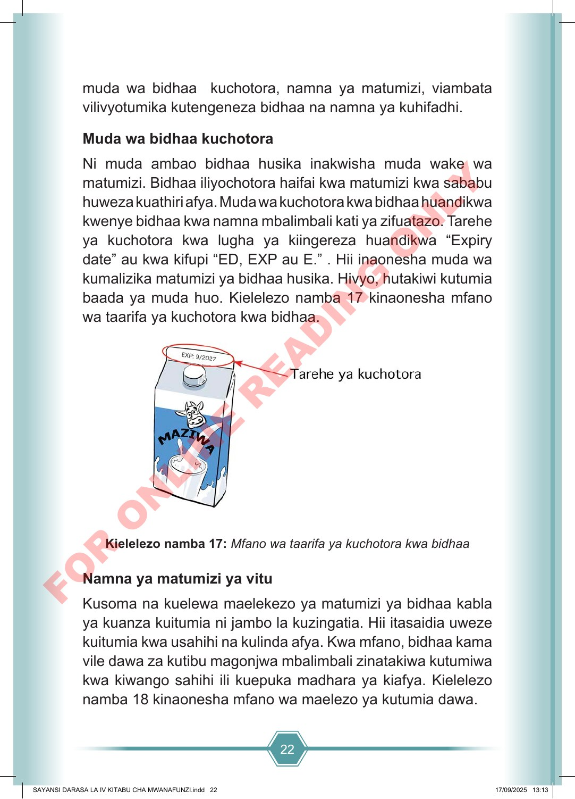

22 muda wa bidhaa kuchotora, namna ya matumizi, viambata vilivyotumika kutengeneza bidhaa na namna ya kuhifadhi. Muda wa bidhaa kuchotora Ni muda ambao bidhaa husika inakwisha muda wake wa matumizi. Bidhaa iliyochotora haifai kwa matumizi kwa sababu huweza kuathiri afya. Muda wa kuchotora kwa bidhaa huandikwa kwenye bidhaa kwa namna mbalimbali kati ya zifuatazo. Tarehe ya kuchotora kwa lugha ya kiingereza huandikwa “Expiry date” au kwa kifupi “ED, EXP au E.” . Hii inaonesha muda wa kumalizika matumizi ya bidhaa husika. Hivyo, hutakiwi kutumia baada ya muda huo. Kielelezo namba 17 kinaonesha mfano wa taarifa ya kuchotora kwa bidhaa. Kielelezo namba 17: Mfano wa taarifa ya kuchotora kwa bidhaa Namna ya matumizi ya vitu Kusoma na kuelewa maelekezo ya matumizi ya bidhaa kabla ya kuanza kuitumia ni jambo la kuzingatia. Hii itasaidia uweze kuitumia kwa usahihi na kulinda afya. Kwa mfano, bidhaa kama vile dawa za kutibu magonjwa mbalimbali zinatakiwa kutumiwa kwa kiwango sahihi ili kuepuka madhara ya kiafya. Kielelezo namba 18 kinaonesha mfano wa maelezo ya kutumia dawa. SAYANSI DARASA LA IV KITABU CHA MWANAFUNZI.indd 22 SAYANSI DARASA LA IV KITABU CHA MWANAFUNZI.indd 22 17/09/2025 13:13 17/09/2025 13:13 F O R O N L I N E R E A D I N G O N L Y